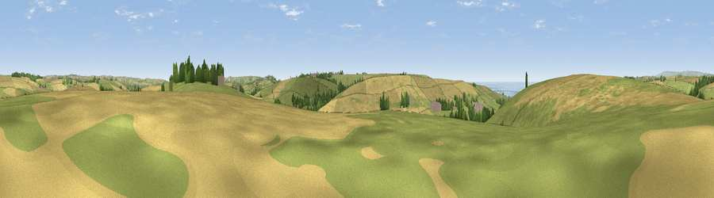

Viewpoint near South Milton
#25374 in England · top 56% of its area beats it · near South MiltonThe view, rendered

A 360° render of this exact spot computed from the terrain model, tree cover and land cover — summer colours, afternoon light, calibrated against photographs of famous viewpoints. Real trees, hedges and buildings will differ in detail.
The panorama
Grey silhouette: terrain skyline in each direction (720 bearings, Earth curvature and refraction included). Dashed green: skyline with trees (+15 m) and buildings (+8 m) as obstacles. Blue strip: how far the ground is visible on each bearing.
Where the view opens
Wedge length = distance to the farthest visible ground on that bearing (vegetation-aware). Rings at 10, 25 and 50 km.
What fills the view
48% cropland · 44% grassland · 4% woodland · 3% water ·
Angular shares of the visible panorama (visual magnitude), not map area. Landscape diversity 0.42 (0–1 Shannon).
Key numbers
More beautiful places nearby
The staircase of upgrades: each row has a higher view potential than everything closer. Driving times are estimates from straight-line distance, calibrated against real road routing — check an actual route before setting out.
| Place | Direction | Drive | Score |
|---|---|---|---|
| Viewpoint near Malborough | SSE · 1 km | ~4 min | 54.8 |
| Viewpoint near Thurlestone | NW · 3 km | ~8 min | 71.6 |
| Viewpoint near Galmpton | SSW · 3 km | ~8 min | 76.4 |
| Viewpoint near Hope | SSW · 4 km | ~9 min | 84.4 |
| Viewpoint near East Prawle | SE · 9 km | ~17 min | 84.6 |
| Pencarrow Head | W · 56 km | ~77 min | 86.0 |
| Viewpoint near Stenalees | W · 72 km | ~95 min | 88.0 |
| Viewpoint near Crackington Haven | NW · 77 km | ~101 min | 88.1 |
50.26211, -3.82207 · source: screening · position refined by local search. Computed location — check access rights before visiting.